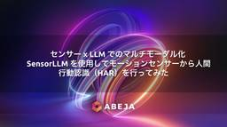

ABEJA Tech Blog
https://tech-blog.abeja.asia/
中の人の興味のある情報を発信していきます
フィード
Genkit Go に入門してみた
ABEJA Tech Blog
実行環境 基本機能 Hello, Genkit LLMを呼び出す 会話履歴を持たせる Tool Calling Tool CallingでLLMに仕事をしてもらう Tool Callingも履歴に残す Tool Callingに認可を実装する おわりに We Are Hiring! ABEJA Insight for Retailの開発・保守を担当している平原です。 AI 搭載アプリケーション向けのオープンソースフレームワーク Genkit の Go SDK は、2025年9月に安定版がリリースされてからしばらく経ちます。 今更ながらですが、応答が長くなりやすいLLMを並列処理に強いGoで実装…
1日前
なぜ「ユーザー価値ファースト」がアジャイル組織をつくるのか？ 〜ソリューションファーストと御用聞き開発の罠〜
ABEJA Tech Blog
スクラムを回しているのに「使われないものが積み上がる」——その正体は御用聞き開発とソリューションファーストの罠かもしれません。アジャイル組織にユーザー価値ファーストが必要な理由を、Instagram誕生の逸話やジョブ理論を交えて整理しました。
1日前
検証環境のCloud Composer 2（Managed Airflow 2） の Redis の OOMで DAG が停止した時の対応記録
ABEJA Tech Blog
事象 最初に観測された事象 その他発生していた事象 事象発生の原因 対処 暫定対応 - Redisメモリの増設 リカバリ - 大量の「未確認の Celery タスク」の処理 恒久対応 - 構成変更 予防 - サイジング・アラート設定 We Are Hiring! ABEJA Insight for Retailの開発・運用を担当している平原です。 検証環境のワークフローエンジンであるCloud Composer 2（Managed Airflow 2）でアップグレードの検証をしようとしたところ、タスクキュー（Redis）のOOMにより停止していたため、復旧対応をした時のログを記事に残しておこう…
3日前

センサー x LLM でのマルチモーダル化 〜 SensorLLM を使用してモーションセンサーから人間行動認識（HAR）を行ってみた
ABEJA Tech Blog
こんにちは！株式会社 ABEJA で ABEJA Platform 開発を行っている坂井（GitHub : @Yagami360）です。 LLM のマルチモーダル化は、この数年で テキスト → 画像 → 動画 → 音声 という風に扱えるモダリティをどんどん広げてきました。個人的には、この流れで次に重要になるのはセンサーデータも含めたマルチモーダル化だと考えています。温度・振動・電力・加速度・生体信号などのような「物理世界の情報」を基盤モデルが直接あるいは間接的に扱えるようになると、現実世界を観測して物理世界での意思決定・行動するタイプの AI ——いわゆるフィジカル AI—— の中核である「知…
3日前
院内検査マスターをJLAC11へマッピング — NEDO医療LLMプロジェクトでのユースケース検証
ABEJA Tech Blog
はじめに 背景：なぜ医療データの「標準化」が必要なのか 扱うデータの概観 JLAC11コードとは（マッピング先の標準コード体系） 医療機関側のデータ（マッピング元のデータ） 検査マスター 試薬マスタ アプローチ：試薬・検査機器情報を起点にしたマッピング 有識者・先行医療機関へのヒアリング なぜ「試薬・検査機器情報」を起点にするのか システムフローの全体像 なぜ完全自動化ではなく「人の判断」を挟むのか 試薬・機器からJLAC検査名称候補を絞り込む2つの方法 方法1：検査名称ベース（ファジーマッチング） 方法2：バーコードベース（GS1-128スキャン） 2つの方法の使い分け 検査名称をLLMで突…
4日前
Mobプロで「何も分からない」と伝えてみた新卒の話
ABEJA Tech Blog
こんにちは。新卒エンジニアとしてアプリケーションGに所属している堂浦です。 私は今年の4月にABEJAへ入社し、現在はABEJA Insight for Retailの開発・運用・保守に携わっています。 入社してから、ReactやGoを使った開発に取り組んでいます。ただ、入社した時点では、どちらもほとんど触ったことがありませんでした。 そんな私が配属後にぶつかったのが、Mobプログラミングで何も分からない問題です。 今回は、その困りごとをレトロスペクティブでチームに伝えてみた話を書きます。 Mobプロには参加している。でも、分からない 私たちのチームでは、開発スタイルの一つとしてMobプログラ…
4日前

センサー x LLM でのマルチモーダル化 〜 センサーデータを LLM に入力し異常検知レポート作成させてみた
ABEJA Tech Blog
こんにちは！ABEJA で ABEJA Platform 開発や AI 関連の研究開発業務を行っている坂井（@Yagami360）です。 LLM のマルチモーダル化は、この数年で テキスト → 画像 → 動画 → 音声 という風に扱えるモダリティをどんどん広げてきました。個人的には、この流れの次に重要になるのはセンサーデータも含めたマルチモーダル化だと考えています。温度・振動・電力・加速度・生体信号などのような「物理世界の情報」を基盤モデルが直接あるいは間接的に扱えるようになると、現実世界を観測して物理世界での意思決定・行動するタイプの AI ——いわゆるフィジカル AI—— の中核である「知…
12日前
Claude の Agent Skills + Routines を使用して最新 AI Tech 情報キャッチアップ用 AI Agent を作成してみた
ABEJA Tech Blog
こんにちは！株式会社 ABEJA で ABEJA Platform 開発や研究開発業務を行っている坂井（GitHub : @Yagami360）です。 去年のアドベントカレンダーで、以下のテックブログを書きました。 tech-blog.abeja.asia この記事では、近年のAI 技術の進歩が著しく最新 AI 技術動向のキャッチアップが追いつかないという自身の課題に対し、Claude / Gemini Client の自作 Python コード + GitHub Actions の構成で自動的に定期実行される「AI Tech キャッチアップ用 AI Agent」を自作し、週次 / 月次 / …
17日前
Physical AI実装で効く制御通信の考え方：OpenArmのCAN FD実例から学ぶフィールドバス
ABEJA Tech Blog
0. はじめに 1. フィールドバスとは 2. Web系通信と比べて理解するフィールドバスの特徴 3. 代表的なフィールドバス・産業ネットワーク 4. 制御通信の仕様を見るときのポイント 4.1 制御周期 4.2 最悪遅延とジッタ 4.3 同期精度 4.4 バス負荷とプロセスデータ設計 4.5 安全・診断・保守性 5. 実際のフィールドバス使用例：OpenArmのCAN FD通信 5.1 OpenArmではCAN FDでモータとサイクリック通信する 5.2 プロトコルの位置づけ：CANopen規格との違い 5.3 5つのパラメータで操るMIT mode：Damiaoモータの制御と状態フィードバ…
24日前
作って終わりにしないための顧客検証ループづくり ～顧客ヒアリングを「価値検証フェーズ」として組み込んだ話
ABEJA Tech Blog
🧭 これまでの課題 🔁 今回整えた流れ 🌱 「PBIの種」という考え方 🌊 実際に感じている変化 🗣️ 実例：VoC整理から生まれた改善テーマ 🧾 まとめ We Are Hiring! こんにちは、ABEJAでプロダクト企画に携わる中村です。 今回は「ABEJA Insight for Retail（略称：IfR）」で取り組んだ、 “作って終わり”にしないための顧客検証ループづくりについてまとめます。 🧭 これまでの課題 IfRではこれまでも、顧客ヒアリング（VoC）をもとに企画・開発を進めていました。 ただ、一つ大きく足りていなかったものがあります。 それは、「作った後の価値検証」です。 機…
2ヶ月前
On-policy のはずが Off-policy になる：LLM 強化学習 の rollout mismatchと対策(rollout correction)
ABEJA Tech Blog
ABEJAでデータサイエンティストをしている服部です。 今回はGRPOなどのLLMの強化学習の中で実際に起こりうる少しマイナーだけど重要かもしれない強化学習のRollout時に発生するトピックについての記事です。 過去にもAgenticRLに関しての記事も書いてますので、こちらも興味ある方いましたら読んでいただけると幸いです。 tech-blog.abeja.asia 本記事は何となくでもGRPOなどの手法で何をしているか知っている前提の記事になっています。 上記記事をベースにした内容をW&B様のホワイトペーパーにも寄稿しており、こちらには強化学習の基礎から書かれているのでこちらももし良ければ…
2ヶ月前
Agentic能力を強化しロングコンテキストに対応したABEJA-Qwen3-14B-Agentic-256k-v0.1の公開
ABEJA Tech Blog
こんにちは。 ABEJAでデータサイエンティストをしている服部です。 弊社は、経済産業省とＮＥＤＯが実施する、国内の生成AIの開発力強化を目的としたプロジェクト「GENIAC（Generative AI Accelerator Challenge）」の1期、2期に続き、3期にも採択され、そこで大規模言語モデルの開発を行っています。 3期ではエージェントとして用いるための基盤モデルを開発しており、特にロングコンテキスト処理性能と Planning / Tool Use などの Agentic な能力の向上に重点を置いて開発を進めております。 そこで開発したモデルを公開しましたので、公開に伴うモデ…
4ヶ月前
エッジ環境でのLocal によるセキュアOCR：Grammar制約で構造化出力を行う
ABEJA Tech Blog
こんにちは、ABEJAでデータサイエンティストをしている伊藤祐希です。 今回は、セキュリティ・リソース制約下でVision Language Model (VLM) を使用する方法と検証を行いました。 サマリ 本記事の主張は以下の3点です。 エッジ（閉域／オフライン）環境でも、Local VLMで画像→構造化データ抽出は成立する ただしプロンプト制御だけでは出力形式が壊れるため、Grammar制約（JSON Schema）が必須 Visual Prompt Injection に対しても、Grammar制約は出力層での防御として機能する 扱う範囲: エッジ環境、CPU推論、構造化出力、Prom…
5ヶ月前
LLMの自律的な調査力を高めるAgenticRLの取り組みと知見
ABEJA Tech Blog
こんにちは。 ABEJAでデータサイエンティストをしている服部です。 LLMの進化は速いですね。 Reasoning能力があることは勿論Agenticな動きをすることも最近求められており、LLM開発においてもPost Trainingの重要性は高まっています。 本記事では、Agenticな能力の向上に向けた Post Training、特にSFTと強化学習で実施したこと、およびその過程で得られた知見をまとめました。 SFTでの精度劣化回避や、Tool-Useを用いたAgenticな強化学習タスクの紹介、強化学習におけるハマりどころなど多岐に渡って詰め込んでいます。 興味ある部分だけでも読んでも…
5ヶ月前
GENIAC3期のLLM開発で使用したロングコンテキスト評価のベンチマーク公開
ABEJA Tech Blog
ABEJAでデータサイエンティストをしている藤原です。 弊社は、経済産業省とＮＥＤＯが実施する、国内の生成AIの開発力強化を目的としたプロジェクト「GENIAC（Generative AI Accelerator Challenge）」の1期、2期に続き、3期にも採択され、そこで大規模言語モデルの開発を行っています。3期ではエージェントとして用いるための基盤モデルを開発しており、特にロングコンテキスト処理性能と Planning / Tool Use などの agentic な能力の向上に重点を置いて開発を進めております。 これまでにも、開発の過程で行ったロングコンテキストLLM評価に関するい…
5ヶ月前
Mentor Pi メカナムホイールを ROS 2 で動かす 〜 macOS 上のシミュレーション環境構築とフロンティアベース探索による検証
ABEJA Tech Blog
導入 ABEJA でインターンをさせていただいている青木です。 本記事では、インターンの成果として「メカナムホイールを搭載した 4 輪ロボット Mentor Pi (Mecanum) を ROS 2 で動かし、macOS 上でシミュレーション・探索まで行う環境を整える」という取り組みを紹介します。 私のロボットに関する記憶として、ポケモンのデオキシスの映画で出てきたホットドックが買える移動販売機のようなものが、幼い自分にとって魅力的に映った記憶があります。移動型のロボットは汎用性が高く、これからさらに普及していくであろうと思っています。 そんな中で出会ったのが、Hiwonder 社が提供する …
5ヶ月前
なぜSSHでは一文字送信するのに100パケットも必要なのか？ Claude Code を使って調査してみた
ABEJA Tech Blog
こんにちは、ABEJA Platform に搭載しているアプリケーション、「ABEJA Insight for Retail」の開発と運用を担当している森永です。 みなさんは普段 SSH を使っていますか？ 私は元々 Vimmer だったこともあり (最近は機能面で楽なので VSCode を使用しておりますが...笑) 、SSH には非常にお世話になっており、現在でも直接叩くことは減りましたが、 VSCode やその他の便利なツールの裏で動く縁の下の力持ちとしてお世話になっています。 とあるテックブログで公開されていた『 Why does SSH send 100 packets per ke…
6ヶ月前
Differential Transformer V2が発表されたので、今更ではあるがV1論文を読んだうえで差分を確認してみた
ABEJA Tech Blog
こんにちは！ABEJAでデータサイエンティストをしている大田です。先日Hugging FaceでDifferential Transformer V2の発表があり、そこでは昨年発表されたDifferential Transformer (V1)と比べてもさらに実用的な改変があったとのことです。去年にV1の論文が出たときは日本語のまとめ記事をざっと読んだくらいでしたが、2つのアテンションの差分を取ってノイズを消すというシンプルなアイデアであるにもかかわらず、実験結果ではアテンションノイズの抑制、スケーリング効率、ハルシネーションの低減など、いろいろな面できれいに改善していて驚いた記憶があります。論文でも触れられていた検索など特定のタスクでの性能向上やロバスト性の改善、V2で実現されたKVキャッシュの効率化など、学習の安定性と高速な推論の両立に貢献したという内容は、特定ドメインの特化型ローカルLLMを手元で構築・運用していく際にも、計算リソースの節約と精度の向上という両面で重要な役割を果たしそうです。ローカルLLM開発や運用に携わっていく立場として、LLMアーキテクチャに標準的に採用される機構は追っていきたいという観点から、Differential Transformerは興味があります。V1成果及びV2での改善点をちゃんと把握しておきたく、今更ながら論文や最新の発表内容に目を通してみました。
6ヶ月前
2足歩行ロボットを作ってみよう（前編）
ABEJA Tech Blog
はじめに ロボットの制作 ハードウェアの設計 モデルの作成 シミュレーション USDの作成とIsaacSimでの確認 プロジェクトの作成 学習条件の設定 環境の設定 Agentの設定 強化学習について 設定の詳細 タスクの設定 歩容改善の取り組みについて 対称性の学習 学習パラメータの改善 周期性の導入 ポテンシャルベースでの報酬 様々な報酬について 歩容・接地パターン系 足の軌道・ストライド・空中時間系 姿勢・位置・速度の追従／安定化系 ジョイント・動力学系（ペナルティ） 模倣学習（Imitation Learning） 蒸留 学習と推論 実験 学習結果 強化学習の報酬ログ 蒸留の報酬のログ…
7ヶ月前
NVIDIA Clara を使用して医療・創薬系の AI モデルを動かしてみた
ABEJA Tech Blog
こんにちは！ABEJA で ABEJA Platform 開発や AI 関連の研究開発業務を行っている坂井（@Yagami360）です。 こちらはABEJAアドベントカレンダー2025の25日目の記事です。 近年のディープラーニングの発展に伴い、マテリアル・創薬・医療分野においても AI の活用が進みつつあるかと思いますが、その市場規模はかなり大きく、どのようなモデルや技術が使用されているのか？とか将来性はどうなのか？とか個人的に興味がありました。 とはいえ自分は、マテリアル・創薬・医療系のドメイン知識に関して素人なので、できるだけさくっと動かせるモデルやフレームワークで試してみたかったのです…
7ヶ月前
今更ながら DeepSeek-R1 の論文を読んでみた
ABEJA Tech Blog
こんにちは！ABEJA で ABEJA Platform 開発や AI 関連の研究開発業務を行っている坂井（@Yagami360）です。 こちらはABEJAアドベントカレンダー2025の24日目の記事です。 今年のはじめ頃、中国の DeepSeek 社から非常に軽量かつ品質の高い LLM が公開され、H100, A100 などの超高価な NVIDIA 製 GPU がなくとも動かせるということで、株価への影響等含めて話題になりました。 この記事書く前の話になりますが、自分としては蒸留使って軽量化した LLM というイメージしかもってなく、とはいえ蒸留って手法は昔から使われてきた手法であり、既存手…
7ヶ月前
gpt-oss-120bに論理クイズや数学の問題を解かせて、推論ログをよく読んでみた。
ABEJA Tech Blog
gpt-oss-120bに論理クイズや数学を解かせて、推論ログをよく読んでみた。
7ヶ月前
Strands + Amazon Bedrock AgentCore + Athenaでお手軽データ分析機構を作ってみる
ABEJA Tech Blog
こんにちは。 株式会社ABEJAのシステム開発部でエンジニアをしている吉田です。 こちらはABEJAアドベントカレンダー2025の24日目の記事です。 ABEJAで仕事をしていると、「エンジニアではないけれど、データベースにあるデータを分析したい」という相談を受けることがあります。 ABEJAでは、比較的SQLを書ける非エンジニアも多いのですが、それでも JOIN や集計を含むSQLを書くハードル 本番DBへの直接アクセスによるセキュリティ・誤操作リスク 分析専用基盤をシステムごとに用意する工数 といった問題があり、「誰でも・安全に・気軽に分析できる」環境を用意するのは簡単ではありません。 そ…
7ヶ月前
π0シリーズで使われるaction expertをコードレベルで理解する
ABEJA Tech Blog
ABEJAアドベントカレンダー2025の24日目の記事です。 ABEJAでデータサイエンティストをしている大谷です。 最近VLAに触れ合うことが増えてきました。11/7にもMacStudioで動かすSO-ARM x π0.5 -解説から実機動作まで-というタイトルで登壇もしました。 ただ、この登壇の時にも感じたのですが、π0で採用されているaction expertが完全理解に至っていないです。 というわけで今回のブログではopenpiの実装からaction_expertの部分に絞ってコードレベルで見ていくことで理解を深めていきます。 πシリーズとは action expertとは サンプルデ…
7ヶ月前
初心者入門：toio を VLA で動かしてみる
ABEJA Tech Blog
こんにちは！ABEJA に新設されたエンボディドインテリジェンスグループ で PM をしている飯嶌です。 こちらはABEJAアドベントカレンダー2025の24日目の記事です。 昨今、Physical AI への注目が集まっています。しかし、実際に SO-101 などのアームロボットを用いて検証を行おうとすると、組み立ての工数や数万円単位の部材コストが発生し、ハードルが高いと感じられる方も多いのではないでしょうか。 今回は、toio を活用し、低コストかつ手軽に VLA の検証環境を構築できないか挑戦しましたので、その取り組みについてご紹介いたします。 Physical AI 検証における課題 …
8ヶ月前
最新 AI Tech 情報キャッチアップ用 AI Agent を作成し自身の研究開発業務を一部自動化してみた
ABEJA Tech Blog
こんにちは！ABEJA で ABEJA Platform 開発や AI 関連の研究開発業務を行っている坂井（@Yagami360）です。 こちらはABEJAアドベントカレンダー2025の23日目の記事です。 ここ５〜６年くらいのAI 技術の進歩は目覚ましですよね。数年前に ChatGPT 登場して以降、更に進歩が大きく加速してきています。 AI 技術の飛躍的な進歩は嬉しい反面、進歩が早すぎて最新の AI 技術動向を全然キャッチアップしきれていないというのが最近の自分の悩みになってました。 そんな研究開発業務における悩みも AI Agent 使えば簡単に解決できるのではないかと思い、研究開発用の…
8ヶ月前
Terminal で暮らそう (序章)
ABEJA Tech Blog
この記事は ABEJAアドベントカレンダー2025 の 23 日目の記事です。 こんにちは！システム開発部の合屋（ごうや）です。 昨年は 今から始める NeoVim 生活 (序章) という記事を書き、Terminal に籠もる生活を送っています。 今年は Claude Code をはじめとする Agent によるコーディング作業も増え、より Terminal に居続けるようになりました。 しかし、実際の作業を行っていると Terminal から出なければならない作業もまだまだあります。 特に DB の中身を見たいときです。 DB を参照したいとき、私はメインとして DBeaver というツール…
8ヶ月前
【ABEJAアジャイル活動記録】停滞を越えて、再び合流へ。「象・死んだ魚・嘔吐」がつないだチームとPOの関係
ABEJA Tech Blog
POとの距離が少しずつ開き、気づけば停滞していたスクラムチーム。「象・死んだ魚・嘔吐」を使って言語化できない違和感を整理し、チームとPOが再び同じ方向を見るまでの実践を、スクラムマスターの視点でまとめました。
8ヶ月前
【LeRobot】テレオペで収集した模倣学習データの中身を解剖する
ABEJA Tech Blog
ABEJAでデータサイエンスしています、瀧田です。本記事はABEJAアドベントカレンダー2025の21日目の記事です。 はじめに テレオペレーションによるデータ収集環境 使用したロボットアーム カメラ構成（3台） 模倣学習のタスク LeRobotにおけるデータセット 前提条件（バージョン情報） ディレクトリのツリー図 それぞれのファイルの役割 データセットの可視化 可視化の実行方法 収集データの構造詳細分析（今回のメイン） meta/info.json observation.state と action の違い stateとactionのグラフ化 meta/tasks.parquet met…
8ヶ月前
【年末大掃除】開発環境VMの再作成 - apt・brew・asdf・Dockerを使い分けたパッケージ管理
ABEJA Tech Blog
はじめに VMの構築 インスタンスの起動（OS選択） ファイアウォール設定 自動シャットダウン OSのアップデートを受け取る 最新で使いたい系ツールのインストール apt管理のツール build-essential Docker direnv セルフアップデート機能ありツール gcloud Homebrew gcloud関連パッケージ cloud-sql-proxy Homebrew 関連パッケージ asdf pyenv nodenv awscli バージョン管理して使いたい系ツールのインストール Go kubectl poetry インストールにコツがいる系 psql おわりに We Are…
8ヶ月前